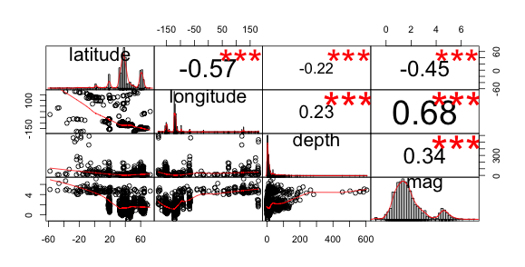

Earthquakes
Tableau Visualisations
I used the earthquake data from the week of the 2011 Tohoku Earthquake in Japan for the visualisations in tableau.
Proportional Comparissons
This first visualisation is a tree map of the sums of magnitude by region. I think a tree map is an appropriate representation for this data since it shows the huge concentration of the earthquakes off the coast of Honshu. This concentration occupies so much of the visualisation that it dwarfs the representation of other earthquakes in the dataset.

This next visualisation represents the same variables but attempts to convey the number of unique earthquakes in a region.

Comparisson Over Time
This visualisation over time again attempts to persuade the reader that the number of earthquakes in Japan that week dwarfs the number anywhere else in the world. The user's eye is drawn to the red while ignoring the pale blues.

Here's a visualisation of the same data over time that is more exploratory in nature. It still emphasises the dominance of the earthquakes in Japan but allows the reader to obtain more information about other earthquakes that occurred that week.

Exploratory Visualisation in R
This is a simple exploratory visualisation in R that shows the correlation between numeric values in the earthquake data for the third week of November 2014. The correlations between magnitude, latitude and longitude were used to inform the design of map representations. The projection in the d3 visualisation was rotated to focus on the Pacific region as a result of this analysis.
Map Visualisation
I have included here a map visualisation of the earthquake data built in tableau to highlight the difficulty visualising earthquake data. If you show this to someone and ask them to point out where the largest earthquake occurred they would rightly point to Japan. However if you asked them to locate the second or third largest earthquakes on the map they might point to Mexico or another location on the map.
The magnitude of the earthquakes can be colour encoded but that still doesn't convey strongly enough the difference in the magnitude of the earthquakes. Moreover, since the magnitude of the earthquakes is measured using a log scale layman readers find it difficult to differentiate between the different magnitudes of earthquakes and their impact.

D3.js Visualisation
With this in mind I designed a visualisation in D3 that attempts to convey the difference in magnitude of these earthquakes. I consider this to be an example of a persuasive and exploratory visualisation since it attempts to persuade the reader of the differences in the impact of the earthquakes and allows the reader to explore the data.
Along with the map visualisation I have include a scatterplot of the magnitude against time so the reader has something to contrast the visualisation with.
I have made use of the angular.js framework in making this visualisation. This has allowed me to connect directly to the earthquakes database and allows the reader to load in data for 3 earthquakes; Tohoku 2011, Sichuan 2008 and Haiti 2010. The initial visualisation is for the Tohoku earthquake.
I have also included a form at the bottom of the visualisation which allows the reader to load earthquake data for dates of their choosing.
The visualisation is located here.